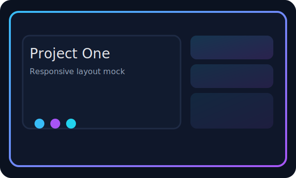
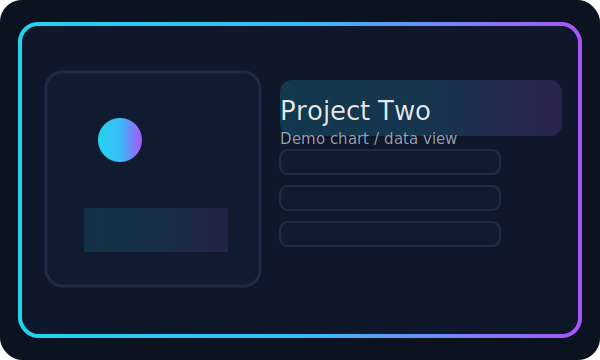

Projects
Here are a few things I’ve built. Each project has a short summary, tech used, and a screenshot placeholder you can replace with your own images.
Logic Gates Construction
Electronics • Digital LogicConstructed basic logic gates (AND, OR, NOT, etc.) using transistors and other electronic components. This project was completed in a team of 4–5 students and helped strengthen my understanding of digital logic and practical electronics.

- Technologies / Tools Used: Breadboards, Transistors, Logic Gate Components
- Team Size: 4-5 students
- Key Learning: Understanding of digital logic and practical electronics implementation
Hour of Code Workshop
Education • TeachingParticipated in an Hour of Code workshop, teaching children the basics of coding and how to apply algorithms creatively. This project was completed in a team of 4 students and helped improve my communication, teaching, and teamwork skills.

- Technologies / Tools Used: Scratch, Python
- Team Size: 4 students
- Key Learning: Improved communication, teaching, and teamwork skills through educational outreach